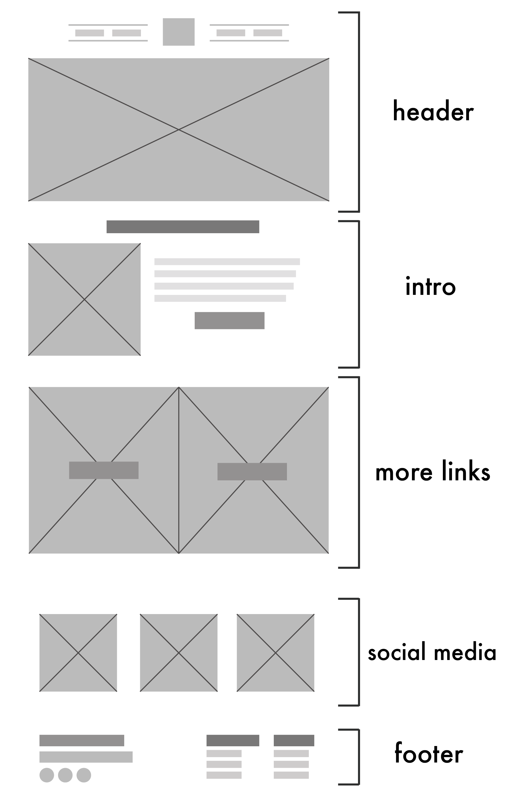
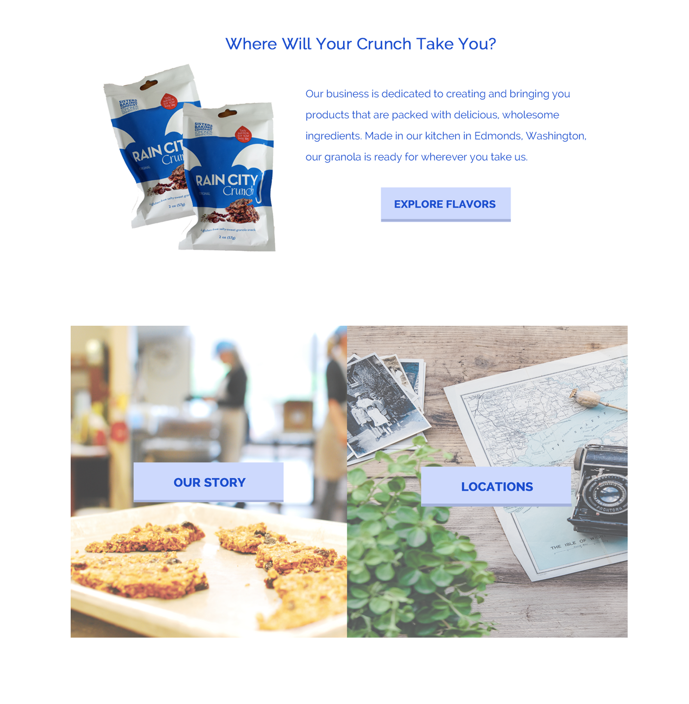

SPRING, SUMMER 2017
SISTER'S BAKING COMPANY
HTML/CSS, PHP, Adobe Photoshop, Wordpress
Sister's Baking Company is an Edmonds-based granola business run by sisters Jen and Jamie. They're known for their crunchy caramel granola bark that can be purchased around the Greater Seattle Area. Like any growing business, they saw the need for an informative, modern website, so they approached me looking for a minimalist theme that can showcase their product.
PROBLEM
The sisters came to me with the problem that the original website was cluttered and difficult to navigate. The photos were small, and they claimed the front page didn't communicate what their business was about.
Overall, they wanted to do two things:
1. Create an easy-to-use site that made it easy for customers to find what they were looking for
2. Encourage people to interact and participate with Sisters Baking
DISCOVERING USERS
THE CUSTOMER IS ALWAYS RIGHT
There were several standard features that the sisters knew they wanted for this website: easy navigation, a larger focus on images, and a simpler page layout. Visually, we already had a sense of what we wanted. However, it was more difficult to solve the social interaction aspect. How do we create customer motivation to purchase more of the product? And how do we encourage customers to join the community?
We began by talking about the customer demographics of the business. Quickly, I was able to learn that most of their customers are active hikers who want granola on-the-go or busy parents who want a quick, healthy snack. It appeared that their target customers are generally busy, so instead of trying to tell people about how good the granola is, we decided to show them.
DESIGN AND BUILD
We opted for a large image on the head of each page underneath a simplified navigation. Each photo included reflects the customers' lives-- from hiking to everyday suburban life, we made sure to incorporate photos that are relatable to our target demographic.
 
For main body of the home page, we included a few sentences highlighting the values of Sisters Baking, as well as some information about their popular products.
Additionally, we cleaned up the footer of every page to include larger social media links that displayed their photos. By removing outdated pages and cutting down on the unnecessary content, we were able to make the images shine through.

OUTCOME
This new design is fuss-free and clean with a concept as simple as their granola's ingredients. We finished the design and the build at the beginning of August 2017, and the theme has been sent to the comapny, but it has yet to be updated onto the official site.